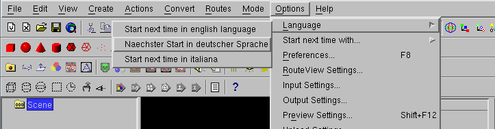
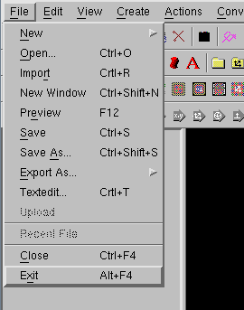
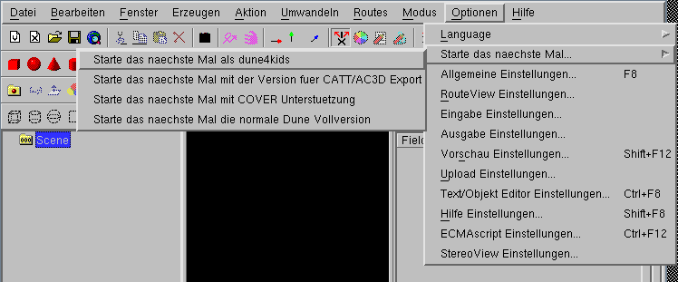
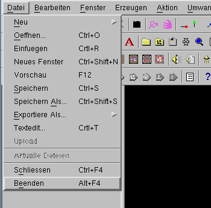

Umstellen auf dune4kids
Zum Umstellen auf Deutsch wird der Untermenupunkt
"Options -> Language -> Naechster Start in deutscher Sprache" benutzt.

"Options" ist das englische Wort fuer "Möglichkeiten"
(das deutsche Fremdwort lautet "Optionen"),
"Language" ist das englische Wort fuer "Sprache".
Danach wird das Programm mit "File -> Exit" beendet und danach
neu gestartet.

Jetzt startet das Programm immer noch mit zu vielen Icons und zu vielen
Menues, aber immerhin in der richtigen Sprache.
Jetzt wird der Menupunkt "Optionen -> Starte das naechste Mal als dune4kids"
benutzt.

Danach wird das Programm mit "Datei -> Beenden" beendet.

Jetzt muss das Programm wiederum neu gestartet werden und zeigt nun endlich
die deutsche Dune4kids Oberfläche.

Wenn man mit der Kommandozeile oder Batchdateien arbeiten kann, kann man
stattdessen das
Programm auf Deutsch und fuer die dune4kids Oberflaeche mit
den Kommandozeilenoptionen "-german" und "-4kids" starten, zum Beispiel
dune -german -4kids